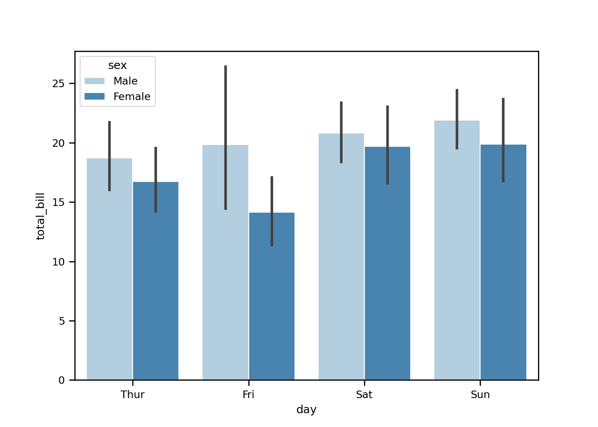

Chapter - 6 Basics Python
import numpy as np
import pandas as pd
import matplotlib.pyplot as plt
import seaborn as sns [1] ".Rhistory" "rsconnect"
[3] ".DS_Store" "R-Summaries.Rproj"
[5] "01-Basics.Rmd" "preamble.tex"
[7] "index.Rmd" "images"
[9] "02-Charts.Rmd" "Summary_files"
[11] "08-references.Rmd" "MIT-Coding-Brain-01-press_0.jpeg"
[13] "packages.bib" "03-Probability.Rmd"
[15] "_output.yml" "docs"
[17] "R-Summaries.Rmd" "07-PracticalDataScience.Rmd"
[19] "www" "04-Simpleregressions.Rmd"
[21] "_bookdown_files" "README.md"
[23] "R-Summaries_files" "05-SEM.Rmd"
[25] "_bookdown.yml" "06-Python.Rmd"
[27] ".gitignore" ".RData"
[29] "style.css" "_book"
[31] "book.bib" ".git"
[33] ".Rproj.user" variable using instead of <-, equal sign =.
y = 5 + 5
y[1] 10Printing characters
print('Hello, readers!')[1] "Hello, readers!"Printing numbers
print(15)[1] 15Printing length of a value
Length = len('Danielle')
print(Length)86.0.1 Data set
Loading the data set & viewing head + tails:
sns.set_context('paper')
tips = sns.load_dataset('tips')
tips.head() total_bill tip sex smoker day time size
0 16.99 1.01 Female No Sun Dinner 2
1 10.34 1.66 Male No Sun Dinner 3
2 21.01 3.50 Male No Sun Dinner 3
3 23.68 3.31 Male No Sun Dinner 2
4 24.59 3.61 Female No Sun Dinner 4tips.tail() total_bill tip sex smoker day time size
239 29.03 5.92 Male No Sat Dinner 3
240 27.18 2.00 Female Yes Sat Dinner 2
241 22.67 2.00 Male Yes Sat Dinner 2
242 17.82 1.75 Male No Sat Dinner 2
243 18.78 3.00 Female No Thur Dinner 2- Length of the variable
- Shape: Number of rows and number of columns
- Type of variables + basic info
- Descriptive statistics variable
len(tips)244tips.shape(244, 7)tips.info()<class 'pandas.core.frame.DataFrame'>
RangeIndex: 244 entries, 0 to 243
Data columns (total 7 columns):
# Column Non-Null Count Dtype
--- ------ -------------- -----
0 total_bill 244 non-null float64
1 tip 244 non-null float64
2 sex 244 non-null category
3 smoker 244 non-null category
4 day 244 non-null category
5 time 244 non-null category
6 size 244 non-null int64
dtypes: category(4), float64(2), int64(1)
memory usage: 7.3 KBtips.describe() total_bill tip size
count 244.000000 244.000000 244.000000
mean 19.785943 2.998279 2.569672
std 8.902412 1.383638 0.951100
min 3.070000 1.000000 1.000000
25% 13.347500 2.000000 2.000000
50% 17.795000 2.900000 2.000000
75% 24.127500 3.562500 3.000000
max 50.810000 10.000000 6.0000006.0.2 Matrixes
Series:
Panda series method:
Serie1 = pd.Series(
[4200, 8000, 6500],
index=["Amsterdam", "Toronto", "Tokyo"]
)
Serie1Amsterdam 4200
Toronto 8000
Tokyo 6500
dtype: int64Python dictionary method:
Serie2 = pd.Series({"Amsterdam": 5, "Tokyo": 8})
Serie2Amsterdam 5
Tokyo 8
dtype: int64Data frame:
Combined_serie = pd.DataFrame({
"Revenue": Serie1,
"Employee_count": Serie2
})
Combined_serie Revenue Employee_count
Amsterdam 4200 5.0
Tokyo 6500 8.0
Toronto 8000 NaNSub-setting by row:
Combined_serie["Tokyo":] Revenue Employee_count
Tokyo 6500 8.0
Toronto 8000 NaN6.0.3 Creating our own functions:
Saying hello + name
def printing_name(name):
print('Good morning,', name)
printing_name('Danielle')Good morning, DanielleMultiple arguments:
Saying hello + name + location
def welcome(name, location):
print("Good morning", name, "Welcome to", location)
welcome("Danielle,", "class.")Good morning Danielle, Welcome to class.6.0.4 Bar plot
sns.set_context('paper')
tips = sns.load_dataset('tips')
tips.head() total_bill tip sex smoker day time size
0 16.99 1.01 Female No Sun Dinner 2
1 10.34 1.66 Male No Sun Dinner 3
2 21.01 3.50 Male No Sun Dinner 3
3 23.68 3.31 Male No Sun Dinner 2
4 24.59 3.61 Female No Sun Dinner 4sns.barplot(x = 'day', y = 'total_bill', hue = 'sex', data = tips,
palette = 'Blues', edgecolor = 'w')
tips.groupby(['day','sex']).mean() total_bill tip size
day sex
Thur Male 18.714667 2.980333 2.433333
Female 16.715312 2.575625 2.468750
Fri Male 19.857000 2.693000 2.100000
Female 14.145556 2.781111 2.111111
Sat Male 20.802542 3.083898 2.644068
Female 19.680357 2.801786 2.250000
Sun Male 21.887241 3.220345 2.810345
Female 19.872222 3.367222 2.944444plt.show()